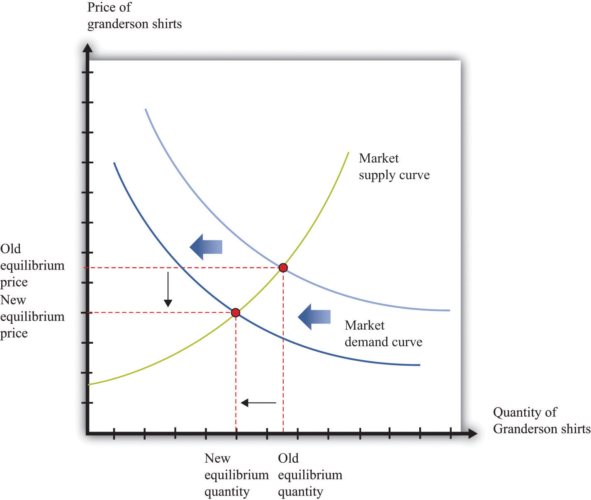
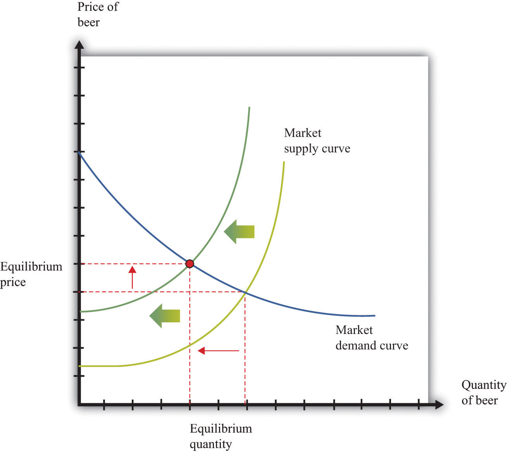

Comparative statics is a tool used to predict the effects of exogenous variables on market outcomes. By exogenous variables, we mean anything that shifts either the market demand curve (for example, news about the health effects of consuming a product) or the market supply curve (for example, weather effects on a crop). By market outcomes, we mean the equilibrium price and the equilibrium quantity in a market. Comparative statics is a comparison of the market equilibrium before and after a change in an exogenous variable.
A comparative statics exercise consists of a sequence of five steps:
Figure 17.13 "Shifts in the Demand Curve" and Figure 17.14 "Shifts in the Supply Curve" show comparative statics in action. In Figure 17.13 "Shifts in the Demand Curve", the market demand curve has shifted to the left. The consequence is that the equilibrium price and the equilibrium quantity both decrease. Notice that the demand curve shifts along a fixed supply curve. In Figure 17.14 "Shifts in the Supply Curve", an increase in the price of an input (hops) has shifted the market supply curve of beer to the left. The consequence is that the equilibrium price increases and the equilibrium quantity decreases. Notice that the supply curve shifts along a fixed demand curve.
Figure 17.13 Shifts in the Demand Curve
Figure 17.14 Shifts in the Supply Curve
